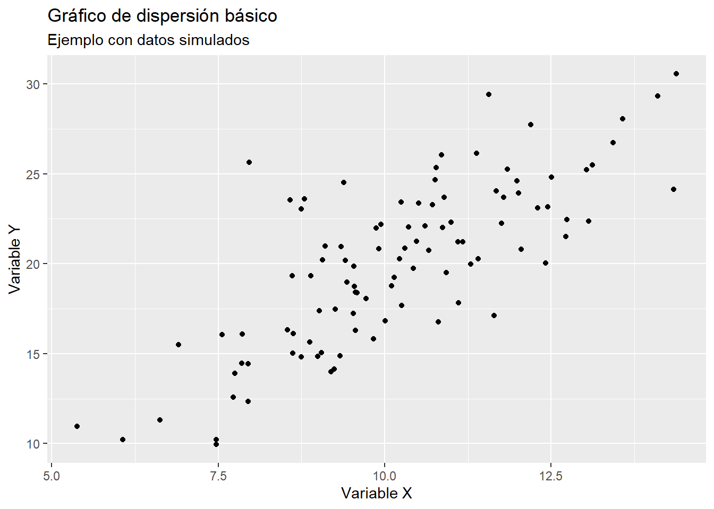
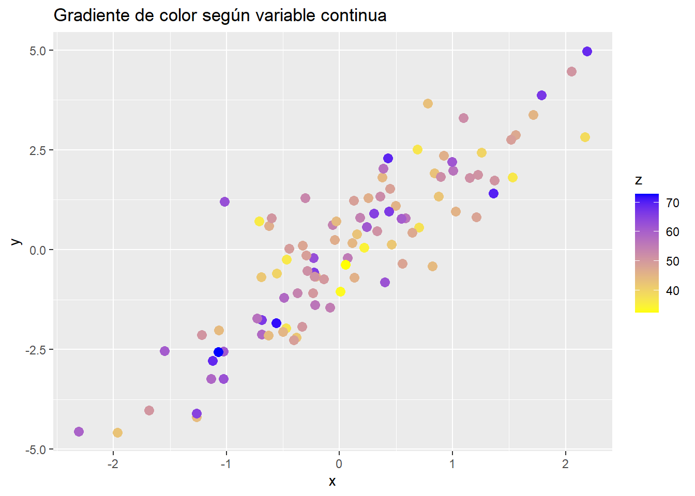
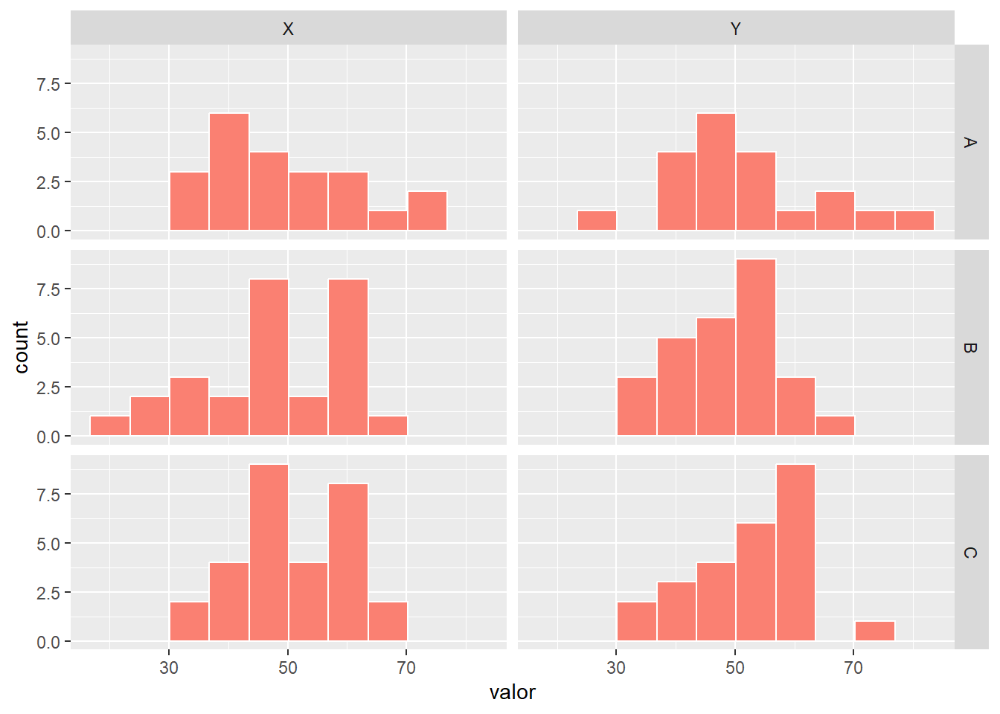

ggplot(data = DATOS, aes(x = VARIABLE_X, y = VARIABLE_Y)) +
GEOM_FUNCION() +
labs(title = "Título del gráfico",
x = "Etiqueta eje X",
y = "Etiqueta eje Y")14 Visualización de datos con ggplot2
La visualización de datos es una herramienta esencial en el análisis estadístico, ya que permite explorar patrones, identificar relaciones y comunicar resultados de manera efectiva. En R, el paquete ggplot2 es ampliamente reconocido por su flexibilidad y capacidad para generar gráficos de alta calidad. Este capítulo aborda los conceptos básicos de ggplot2, la creación de gráficos comunes y las opciones de personalización disponibles, utilizando como ejemplo un conjunto de datos recopilado en un estudio realizado en la Universidad de San Carlos de Guatemala en 2002.
14.1 Contexto de la base de datos utilizada
El estudio mencionado recopiló información de 460 estudiantes de diversas facultades, incluyendo variables como facultad, edad, sexo, estado civil, jornada de estudio, año de ingreso, peso, talla y hábitos como fumar o consumo de alcohol. Este conjunto de datos, disponible en formato CSV, será utilizado para ilustrar las herramientas y conceptos desarrollados en esta sección. El archivo puede descargarse desde el siguiente repositorio: GitHub - Visualización de datos.
Nota: Es necesario descargar el archivo y guardarlo en la carpeta correspondiente al proyecto en curso para ejecutar los ejemplos.
14.2 Introducción al paquete ggplot2
El paquete ggplot2 es una herramienta versátil y poderosa para la visualización de datos en R. Su diseño modular basado en capas permite construir gráficos de calidad profesional, adaptándose tanto a visualizaciones simples como a gráficos complejos. Además, su integración con el ecosistema tidyverse facilita los flujos de trabajo al combinarse con herramientas como dplyr y tidyr para la manipulación de datos (Wickham, 2016).
Entre las principales características de ggplot2 se encuentran:
Flexibilidad: Compatible con una amplia variedad de tipos de gráficos, como gráficos de barras, líneas, puntos, histogramas y diagramas de cajas.
Personalización: Permite ajustar elementos como colores, etiquetas, temas y escalas.
Extensibilidad: Puede ampliarse mediante paquetes adicionales, como
ggthemespara temas personalizados oplotlypara gráficos interactivos.Comunidad activa: Su extensa documentación y comunidad de usuarios facilitan el aprendizaje y la resolución de problemas.
14.2.1 Estructura básica de un gráfico en ggplot2
La creación de gráficos en ggplot2 sigue una estructura modular que permite construir visualizaciones de manera flexible y escalable. La sintaxis general es la siguiente:
Componentes principales:
data: Este argumento define el conjunto de datos que se utilizará para construir el gráfico. Debe ser un data frame o un objeto compatible con este formato. Es el punto de partida para cualquier visualización, ya que contiene las variables que se representarán gráficamente.
aes(): La función
aes()(abreviatura de aesthetics) especifica el mapeo estético, es decir, cómo las variables del conjunto de datos se asignan a los elementos visuales del gráfico. Algunos de los mapeos más comunes incluyen:x: Variable asignada al eje horizontal.y: Variable asignada al eje vertical.color: Variable que define el color de los elementos.size: Variable que define el tamaño de los elementos.shape: Variable que define la forma de los puntos (en gráficos de dispersión, por ejemplo).fill: Variable que define el color de relleno (en gráficos como barras o áreas).GEOM_FUNCION(): La función geométrica (
geom_) define el tipo de gráfico que se desea crear. Cada tipo de gráfico tiene su propia función en ggplot2, como:geom_point(): Gráfico de puntos (dispersión).geom_bar(): Gráfico de barras.geom_line(): Gráfico de líneas.geom_histogram(): Histograma.geom_boxplot(): Diagrama de cajas (boxplot).labs(): La función
labs()se utiliza para añadir etiquetas y títulos al gráfico. Esto incluye:title: Título principal del gráfico.x: Etiqueta del eje X.y: Etiqueta del eje Y.subtitle: Subtítulo del gráfico.caption: Texto adicional, como la fuente de los datos.Operador +: El operador
+es fundamental en ggplot2, ya que permite combinar diferentes capas (layers) en un gráfico. Cada capa puede añadir elementos adicionales, como líneas de tendencia, etiquetas o temas personalizados.
Personalización adicional:
Además de los elementos básicos, ggplot2 permite personalizar los gráficos mediante:
Temas: La función
theme()ajusta el diseño general del gráfico, como el tamaño de las fuentes, los colores de fondo y la posición de las leyendas.Escalas: Las funciones
scale_permiten modificar los colores, tamaños y formas de los elementos gráficos.
14.3 Creación de gráficos básicos
A continuación, se presentan ejemplos de gráficos comunes que se pueden crear con ggplot2, junto con su sintaxis y una explicación detallada. Antes de proceder con la creación de gráficos, es fundamental importar la base de datos y cargar los paquetes necesarios. A continuación, se muestra cómo realizar estos pasos:
14.3.1 Importación de la base de datos
# Ejemplo práctico: Uso de paquetes para visualización
# NOTA: Antes de trabajar, es necesario crear y guardar un nuevo script.
# Instalación y carga de paquetes esenciales
# Paquete que incluye ggplot2, dplyr, tidyr
if (!require("tidyverse")) install.packages("tidyverse")
# Paquete para establecer el directorio de trabajo automáticamente
if (!require("rstudioapi")) install.packages("rstudioapi")
# Importar la base de datos
datos <- read_csv("datos_estudiantes.csv")
# Ver las primeras filas del conjunto de datos
head(datos)Explicación del código:
Instalación y carga de paquetes: Se utiliza la función
if (!require (...))para verificar si los paquetes están instalados. Si no lo están, se instalan automáticamente coninstall.packages(). Automáticamente, se cargan. El paquete tidyverse incluye herramientas esenciales para la manipulación y visualización de datos, como ggplot2, dplyr y tidyr. El paquete rstudioapi permite establecer el directorio de trabajo automáticamente, lo que facilita la organización de los archivos.Establecimiento del directorio de trabajo: La función
setwd()establece el directorio de trabajo en la ubicación del script actual, utilizandorstudioapi::getActiveDocumentContext()$path. Esto asegura que los archivos se encuentren en la misma carpeta que el script, mejorando la reproducibilidad.Importación de datos: La función
read_csv()del paquete readr se utiliza para leer archivos CSV. La funciónhead()permite visualizar las primeras filas del conjunto de datos, proporcionando una vista previa de su estructura.
14.3.1.1 Notas importantes
Es fundamental asegurarse de que el archivo
datos_estudiantes.csvesté ubicado en el directorio de trabajo establecido.Si el archivo no se encuentra en el directorio especificado, se generará un error. En ese caso, se puede verificar la ubicación del archivo con
getwd()o establecer manualmente el directorio consetwd("ruta/del/directorio").
14.3.2 Histogramas
Los histogramas son gráficos que permiten visualizar la distribución de una variable numérica, mostrando cómo se agrupan los valores en intervalos específicos. Son útiles para identificar patrones, como la simetría, la dispersión, la presencia de valores atípicos o la forma general de la distribución (e.g., normal, sesgada, etc.).
14.3.2.1 Ejemplo práctico: Creación de un histograma
El siguiente código muestra cómo crear un histograma utilizando ggplot2 para explorar la distribución del peso de los estudiantes:
# Ejemplo práctico: Creación de un histograma
ggplot(data = datos, aes(x = PESO_lbs)) +
geom_histogram(binwidth = 5, fill = "skyblue", color = "black") +
labs(title = "Distribución del peso de los estudiantes",
x = "Peso (libras)",
y = "Frecuencia")
Explicación del código:
ggplot(data = datos, aes(x = PESO_lbs)): Se define el conjunto de datos (
datos) y se especifica la variable numérica que se desea analizar (PESO_lbs) dentro de la funciónaes(). Esta variable se asigna al eje X, ya que el histograma representa la frecuencia de los valores en este eje.geom_histogram(): Esta función geométrica es la encargada de crear el histograma. Cada barra representa la frecuencia de los valores que caen dentro de un intervalo específico.
Argumento binwidth: El parámetro
binwidthdefine el ancho de los intervalos (o “bins”) en los que se agrupan los datos. En este caso, se establece un ancho de 5 unidades, lo que significa que cada barra del histograma abarca un rango de 5 libras.Un valor más pequeño de
binwidthgenera más barras, proporcionando mayor detalle, mientras que un valor más grande agrupa los datos en menos barras, mostrando una visión más general.Argumentos fill y color:
fill: Define el color de relleno de las barras. En este ejemplo, se utiliza el color “skyblue” para un diseño visualmente atractivo.color: Define el color del borde de las barras, que en este caso es negro (“black”). Esto ayuda a diferenciar claramente las barras entre sí.labs(): La función
labs()se utiliza para añadir etiquetas descriptivas al gráfico:title: Título principal del gráfico, que describe el propósito del histograma.x: Etiqueta del eje X, que indica la variable representada (en este caso, el peso en libras).y: Etiqueta del eje Y, que muestra la frecuencia de los valores.
14.3.3 Gráficos de barras
Los gráficos de barras son ideales para representar datos categóricos, mostrando la frecuencia o el conteo de observaciones en cada categoría. Este tipo de gráfico es útil para comparar grupos o categorías de manera visual y sencilla.
14.3.3.1 Ejemplo práctico: Creación de un gráfico de barras
El siguiente código muestra cómo crear un gráfico de barras utilizando ggplot2 para analizar la distribución de estudiantes según su jornada:
# Ejemplo práctico: Creación de un gráfico de barras
ggplot(data = datos, aes(x = JORNADA)) +
geom_bar(fill = "orange", color = "black") +
labs(title = "Distribución de estudiantes por jornada",
x = "Jornada",
y = "Frecuencia")
Explicación del código:
ggplot(data = datos, aes(x = JORNADA)): Se define el conjunto de datos (
datos) y se especifica la variable categóricaJORNADAdentro de la funciónaes(). Esta variable se asigna al eje X, ya que el gráfico de barras representa las categorías en este eje.geom_bar(): Esta función geométrica genera el gráfico de barras. Por defecto,
geom_bar()cuenta automáticamente las observaciones en cada categoría de la variable especificada en el eje X.Argumentos fill y color:
fill: Define el color de relleno de las barras. En este ejemplo, se utiliza el color “orange” para un diseño llamativo.color: Define el color del borde de las barras, que en este caso es negro (“black”). Esto ayuda a resaltar las barras y separarlas visualmente.
14.3.4 Gráficos de dispersión (scatterplots)
Los gráficos de dispersión son herramientas visuales que permiten analizar la relación entre dos variables numéricas. Cada punto en el gráfico representa una observación, donde la posición en el eje X corresponde al valor de una variable y la posición en el eje Y al valor de la otra. Este tipo de gráfico es útil para identificar patrones, tendencias, correlaciones y posibles valores atípicos.
14.3.4.1 Ejemplo práctico: Creación de un gráfico de dispersión
El siguiente código muestra cómo crear un gráfico de dispersión utilizando ggplot2 para explorar la relación entre la talla y el peso de los estudiantes:
# Ejemplo práctico: Creación de un gráfico de dispersión
ggplot(data = datos, aes(x = TALLA, y = PESO_lbs)) +
geom_point(color = "red", size = 2) +
labs(title = "Relación entre talla y peso",
x = "Talla (metros)",
y = "Peso (libras)")
ggplot(data = datos, aes(x = TALLA, y = PESO_lbs)): Se define el conjunto de datos (
datos) y se especifican las variables numéricas que se desean analizar:TALLA: Variable asignada al eje X (talla en metros).PESO_lbs: Variable asignada al eje Y (peso en libras).geom_point(): Esta función geométrica dibuja los puntos en el gráfico, representando cada observación del conjunto de datos.
Argumentos color y size:
color: Define el color de los puntos. En este ejemplo, los puntos se dibujan en rojo (“red”).size: Define el tamaño de los puntos. Aquí se establece un tamaño de 2 para que los puntos sean más visibles.
14.3.5 Boxplots
Los boxplots (o diagramas de caja y bigotes) son gráficos que permiten visualizar la distribución de una variable numérica y compararla entre diferentes grupos categóricos. Este tipo de gráfico es útil para identificar la mediana, la dispersión, los valores atípicos y la simetría de los datos dentro de cada grupo.
14.3.5.1 Ejemplo práctico: Creación de un boxplot
El siguiente código muestra cómo crear un boxplot utilizando ggplot2 para analizar la distribución del peso de los estudiantes según su sexo:
ggplot(data = datos, aes(x = SEXO, y = PESO_lbs, fill = SEXO)) +
geom_boxplot() +
labs(title = "Distribución del peso por sexo",
x = "Sexo",
y = "Peso (libras)")
Explicación del código
ggplot(data = datos, aes(x = SEXO, y = PESO_lbs, fill = SEXO)): Se define el conjunto de datos (
datos) y se especifican las variables:SEXO: Variable categórica asignada al eje X, que define los grupos a comparar.PESO_lbs: Variable numérica asignada al eje Y, cuya distribución se analiza dentro de cada grupo.fill: Argumento opcional que asigna un color de relleno diferente a cada grupo basado en la variableSEXO.geom_boxplot(): Esta función geométrica genera el boxplot. Cada caja representa la distribución de la variable numérica dentro de un grupo categórico.
14.3.5.2 Elementos clave de un boxplot
Un boxplot incluye los siguientes elementos visuales:
Caja (box): Representa el rango intercuartílico (IQR), que abarca del primer cuartil (Q1) al tercer cuartil (Q3).
Línea dentro de la caja: Indica la mediana de los datos.
Bigotes (whiskers): Extienden los valores hasta 1.5 veces el IQR desde los cuartiles Q1 y Q3.
Puntos fuera de los bigotes: Representan valores atípicos (outliers), que están fuera del rango esperado.
14.3.6 Gráfico de líneas
Los gráficos de líneas son ideales para visualizar tendencias a lo largo del tiempo o en secuencias de datos ordenados. Este tipo de gráfico es especialmente útil para identificar patrones, como aumentos, disminuciones o fluctuaciones en los datos.
14.3.6.1 Ejemplo práctico: Creación de un gráfico de líneas
El siguiente código muestra cómo crear un gráfico de líneas utilizando ggplot2 para visualizar la cantidad de estudiantes encuestados por año de ingreso:
# Crear un gráfico de líneas de estudiantes por año de ingreso
ggplot(data = datos, aes(x = AÑO_ING)) +
geom_line(stat = "count", color = "darkblue", linewidth = 1.2) +
geom_point(stat = "count", color = "darkred", size = 3) +
labs(title = "Estudiantes encuestados por año de ingreso",
subtitle = "Universidad de San Carlos de Guatemala (2002)",
x = "Año de ingreso",
y = "Número de estudiantes") Explicación del código
ggplot(data = datos, aes(x = AÑO_ING)): Se define el conjunto de datos (
datos) y se especifica la variableAÑO_INGcomo el eje X, que representa los años de ingreso de los estudiantes. En este caso, no se especifica una variable para el eje Y, ya que el conteo de estudiantes por año se calcula automáticamente constat = "count".geom_line(stat = “count”, color = “darkblue”, linewidth = 1.2): La función
geom_line()genera la línea que conecta los puntos correspondientes al conteo de estudiantes por año.stat = "count"indica que se debe contar automáticamente el número de observaciones en cada categoría del eje X.color: Define el color de la línea (en este caso, azul oscuro).linewidth: Ajusta el grosor de la línea (1.2 en este ejemplo).geom_point(stat = “count”, color = “darkred”, size = 3): La función
geom_point()añade puntos en cada categoría del eje X, representando el conteo de estudiantes.stat = "count"asegura que los puntos correspondan al conteo calculado.color: Define el color de los puntos (en este caso, rojo oscuro).size: Ajusta el tamaño de los puntos (3 en este ejemplo).
14.4 Personalización de gráficos
La personalización de gráficos en ggplot2 permite adaptarlos a diferentes necesidades, mejorando tanto su presentación como su capacidad para comunicar información de manera efectiva. A continuación, se describen algunas de las opciones más comunes, comenzando con la personalización de colores.
14.4.1 Personalización de colores
En ggplot2, es posible modificar los colores de los elementos del gráfico, como puntos, barras o líneas, para destacar información clave o mejorar la estética general. Esto se puede lograr utilizando argumentos como color (para bordes o contornos) y fill (para colores de relleno).
14.4.1.1 Personalización de colores en un gráfico de dispersión
El siguiente código muestra cómo personalizar el color de los puntos en un gráfico de dispersión:
# Personalización de colores en un gráfico de dispersión
ggplot(data = datos, aes(x = TALLA, y = PESO_lbs)) +
geom_point(color = "darkgreen", size = 2) +
labs(title = "Relación entre talla y peso",
x = "Talla (metros)",
y = "Peso (libras)")
En este ejemplo:
color = "darkgreen"define el color de los puntos como verde oscuro.size = 2ajusta el tamaño de los puntos para mejorar su visibilidad.
14.4.1.2 Personalización de colores por grupo
Si se desea asignar colores diferentes a los puntos según una variable categórica, se puede incluir el argumento color dentro de aes():
# Personalización de colores por grupo
ggplot(data = datos, aes(x = TALLA, y = PESO_lbs, color = SEXO)) +
geom_point(size = 2) +
labs(title = "Relación entre talla y peso por sexo",
x = "Talla (metros)",
y = "Peso (libras)",
color = "Sexo")
En este ejemplo:
Los puntos se colorean automáticamente según los valores de la variable
SEXO.La leyenda se genera de forma automática para indicar el significado de los colores.
14.4.1.3 Personalización de colores en gráficos con relleno
En gráficos como barras o boxplots, se utiliza el argumento fill para personalizar el color de relleno:
# Personalización de colores en gráficos con relleno
ggplot(data = datos, aes(x = SEXO, y = PESO_lbs, fill = SEXO)) +
geom_boxplot() +
labs(title = "Distribución del peso por sexo",
x = "Sexo",
y = "Peso (libras)",
fill = "Sexo")
En este ejemplo, las cajas del boxplot se rellenan con colores diferentes según la variable SEXO.
14.4.1.4 Escalas de color personalizadas
Para un mayor control sobre los colores, se pueden definir escalas personalizadas utilizando funciones como scale_color_manual() o scale_fill_manual():
# Escalas de color personalizadas
ggplot(data = datos, aes(x = SEXO, y = PESO_lbs, fill = SEXO)) +
geom_boxplot() +
scale_fill_manual(values = c( "pink", "lightblue")) +
labs(title = "Distribución del peso por sexo",
x = "Sexo",
y = "Peso (libras)",
fill = "Sexo")En este ejemplo, se asignan colores específicos a cada categoría de la variable SEXO, R realiza la realiza la asignación de los colores de la escala en orden alfabético de las variables categóricas.
14.4.2 Etiquetas y títulos
En ggplot2, es posible añadir y personalizar títulos, subtítulos y etiquetas de los ejes para mejorar la claridad y presentación de los gráficos. Estas etiquetas ayudan a contextualizar la información y a facilitar su interpretación.
14.4.2.1 Personalización de títulos y etiquetas
La función labs() se utiliza para añadir y personalizar los siguientes elementos:
title: Título principal del gráfico, que describe su propósito o contenido.subtitle: Subtítulo que proporciona información adicional o contexto.x: Etiqueta del eje X, que describe la variable representada en este eje.y: Etiqueta del eje Y, que describe la variable representada en este eje.caption(opcional): Texto adicional, como la fuente de los datos o notas aclaratorias.
14.4.2.2 Añadir subtítulos y etiquetas personalizadas
El siguiente código muestra cómo personalizar títulos, subtítulos y etiquetas de los ejes en un gráfico de dispersión:
# Añadir subtítulos y etiquetas personalizadas
ggplot(data = datos, aes(x = TALLA, y = PESO_lbs)) +
geom_point() +
labs(title = "Relación entre talla y peso",
subtitle = "Datos del estudio de 2002",
x = "Talla (metros)",
y = "Peso (libras)",
caption = "Fuente: Base de datos de estudiantes")
En este ejemplo:
titleañade un título descriptivo al gráfico.subtitleproporciona contexto adicional, como el año del estudio.xyypersonalizan las etiquetas de los ejes, indicando las unidades de medida.captionincluye una nota al pie con la fuente de los datos.
14.4.2.3 Ajuste de la posición y estilo de los títulos
Se puede personalizar la posición, tamaño y estilo de los títulos utilizando la función theme():
# Ajuste de la posición y estilo de los títulos
ggplot(data = datos, aes(x = TALLA, y = PESO_lbs)) +
geom_point() +
labs(title = "Relación entre talla y peso",
subtitle = "Datos del estudio de 2002",
x = "Talla (metros)",
y = "Peso (libras)") +
theme(plot.title = element_text(hjust = 0.5,
size = 16,
face = "bold"),
plot.subtitle = element_text(hjust = 0.5,
size = 12,
face = "italic"))
En este ejemplo:
hjust = 0.5centra el título y el subtítulo.sizeajusta el tamaño del texto.facedefine el estilo del texto ("bold"para negrita,"italic"para cursiva).
14.4.2.4 Rotación de etiquetas en los ejes
Si las etiquetas del eje X son largas o numerosas, se pueden rotar para mejorar la legibilidad:
# Rotación de etiquetas en los ejes
ggplot(data = datos, aes(x = TALLA, y = PESO_lbs)) +
geom_point() +
labs(title = "Relación entre talla y peso",
x = "Talla (metros)",
y = "Peso (libras)") +
theme(axis.text.y = element_text(angle = 90, hjust = 0.5))
En este ejemplo, las etiquetas del eje Y se rotan 90 grados.
14.4.3 Temas
En ggplot2, los temas permiten modificar el estilo general de un gráfico, ajustando elementos como el fondo, las líneas de los ejes, las fuentes y la disposición de los textos. Esto facilita la creación de gráficos con un diseño coherente y adaptado a diferentes propósitos, como presentaciones, informes o publicaciones.
14.4.3.1 Aplicación de temas predefinidos
ggplot2 incluye varios temas predefinidos que se pueden aplicar directamente para cambiar el estilo del gráfico. Algunos de los más comunes son:
theme_minimal(): Un diseño limpio y moderno, con un fondo blanco y líneas simples.theme_classic(): Un estilo clásico con líneas de ejes visibles y sin cuadrícula.theme_light(): Similar atheme_minimal(), pero con cuadrículas más visibles.theme_dark(): Un diseño con fondo oscuro, ideal para presentaciones.theme_void(): Un gráfico sin ejes ni cuadrículas, útil para gráficos personalizados.
14.4.3.2 Ejemplo: Aplicar un tema minimalista
El siguiente código muestra cómo aplicar el tema theme_minimal() a un gráfico de dispersión:
# Ejemplo: Aplicar un tema minimalista
ggplot(data = datos, aes(x = TALLA, y = PESO_lbs)) +
geom_point() +
theme_minimal()
En este ejemplo: theme_minimal() elimina elementos innecesarios, como bordes y fondos grises, dejando un diseño limpio y profesional.
14.4.3.3 Ejemplo: personalización de temas
Además de los temas predefinidos, es posible personalizar elementos específicos del gráfico utilizando la función theme(). Por ejemplo:
# Personalización de temas
ggplot(data = datos, aes(x = TALLA, y = PESO_lbs)) +
geom_point() +
theme_minimal() +
theme(
plot.title = element_text(hjust = 0.5, size = 16, face = "bold"),
axis.text = element_text(size = 12),
axis.title = element_text(size = 14, face = "italic"),
panel.grid.major = element_line(color = "gray", linetype = "dashed")
) +
labs(title = "Relación entre talla y peso",
x = "Talla (metros)",
y = "Peso (libras)")
En este ejemplo:
plot.titlecentra el título y ajusta su tamaño y estilo.axis.textyaxis.titlemodifican el tamaño y estilo de las etiquetas de los ejes.panel.grid.majorpersonaliza las líneas de la cuadrícula principal, cambiando su color y estilo.
14.4.4 Facetas
Las facetas en ggplot2 permiten dividir un gráfico en múltiples subgráficos basados en los valores de una variable categórica. Esto es especialmente útil para comparar patrones o relaciones entre diferentes grupos dentro de un conjunto de datos, manteniendo la coherencia visual.
14.4.4.1 Ejemplo: relación entre talla y peso por facultad
El siguiente código muestra cómo utilizar facetas para analizar la relación entre talla y peso, separando los datos por facultad:
# Ejemplo: relación entre talla y peso por facultad
ggplot(data = datos, aes(x = TALLA, y = PESO_lbs)) +
geom_point() +
facet_wrap(~ FACULTAD) +
labs(title = "Relación entre talla y peso por facultad")
En este ejemplo:
facet_wrap(~ FACULTAD)divide el gráfico en subgráficos, uno para cada valor único de la variableFACULTAD.Cada subgráfico muestra la relación entre
TALLAyPESO_lbspara una facultad específica.
14.4.5 Ejemplo avanzado de personalización
La flexibilidad y la lógica de capas de ggplot2 permiten crear gráficos con un alto grado de personalización, adaptados a necesidades específicas y con un diseño profesional. A continuación, se presenta un ejemplo de un gráfico de barras con personalización detallada:
# Ejemplo avanzado de personalización
ggplot(data = datos, aes(x = FACULTAD)) +
geom_bar(fill = "steelblue", color = "black", alpha = 0.8) +
labs(
title = "Distribución de estudiantes por facultad",
subtitle = "Datos del estudio de 2002, USAC",
x = "Facultad",
y = "Cantidad de estudiantes",
caption = "Fuente: Estudio realizado en 2002"
) +
theme_minimal() +
theme(
plot.title = element_text(size = 16, face = "bold", hjust = 0.5),
plot.subtitle = element_text(size = 12, hjust = 0.5, color = "gray50"),
axis.title = element_text(size = 12, face = "bold"),
axis.text.x = element_text(angle = 45, hjust = 1, size = 10),
panel.grid.major.x = element_blank(),
panel.grid.minor = element_blank(),
plot.caption = element_text(hjust = 0, size = 8, color = "gray50")
)14.4.5.1 Explicación del código
Datos y mapeo estético:
aes(x = FACULTAD): Se utiliza la variableFACULTADdirectamente desde la base de datos para el eje X.Gráfico de barras:
geom_bar(): Genera automáticamente las barras basándose en la frecuencia de cada categoría. En el ejemplo se utilizaron los siguientes argumentos:fill = "steelblue": Define el color de relleno de las barras como azul acero.color = "black": Establece el color de los bordes de las barras en negro.alpha = 0.8: Ajusta la transparencia de las barras, permitiendo un diseño más suave.Etiquetas y títulos:
labs(): Añade un título principal, subtítulo, etiquetas para los ejes y una nota al pie con la fuente de los datos.Tema profesional:
theme_minimal(): Aplica un diseño limpio y moderno.Personalización específica:
theme(): Personaliza elementos específicos del gráfico empleando los siguiente argumentos:plot.title: Ajusta el tamaño, estilo (negrita) y posición (centrado) del título.plot.subtitle: Cambia el tamaño, posición y color del subtítulo.axis.title: Modifica el tamaño y estilo de las etiquetas de los ejes.axis.text.x: Rota las etiquetas del eje X 45 grados para mejorar la legibilidad, especialmente si las categorías tienen nombres largos.panel.grid.major.xypanel.grid.minor: Elimina las líneas de cuadrícula verticales y menores para un diseño más limpio.plot.caption: Ajusta el tamaño, posición y color de la nota al pie.